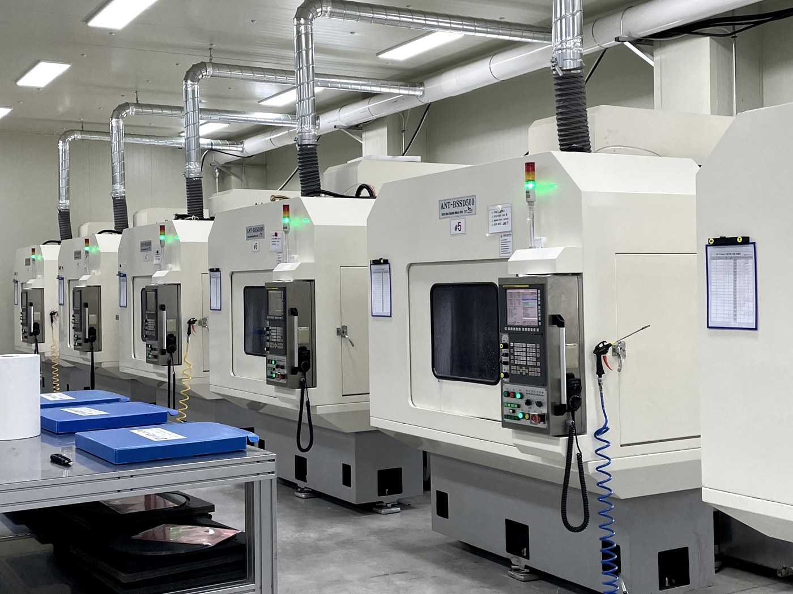

Si
單晶矽
Single Crystal Silicon
硬度 ~1,200 Hv
Both-Side Drilling Machine（雙面鑽孔機）
全球首創雙主軸同步微孔鑽孔機。兩根主軸從工件兩面同時鑽削——消除傳統鑽孔中因翻轉工件而產生的同心度缺陷。

多臺ANT-BSSD500正在生產線上同時運轉。每臺裝置的設計、製造、組裝與測試,全程由總部獨立完成——任何環節均無外包。設計您機器的工程團隊,正是交付後為您提供售後支援的同一團隊。

從原料鑄造到最終校準——每一道工序均在我們的工廠內完成。精密加工、電氣組裝、CNC控制器整合、主軸校準以及完整的功能測試,均在裝置出廠前全部完成。
雙面同步鑽孔與水平式結構,同時提升加工品質、可加工性與生產效率。
消除工件翻轉工序——傳統鑽孔中同心度誤差的最大來源。
水平方向的孔軸使切屑得以自然排出——實現真正深孔鑽孔的關鍵所在。

專門用於硬度1,000 Hv以上難加工脆性材料的孔加工。
基於金剛石刀具的精密加工技術,最大限度減少崩邊與微裂紋。
同時適用於:多晶矽 · SiC · 氧化鋁陶瓷 · 石墨 · 藍寶石
幹法蝕刻、CVD、ALD腔體中的耗材零部件含有數百至數千個精密孔。ANT-BSSD500正是為這類微孔加工而設計。
幹法蝕刻腔體內的等離子體生成電極。需在兩面加工數百至數千個貫通孔。
CVD/ALD腔體的氣體分配部件。需要高精度孔陣列以實現均勻氣流分佈。
雙面同時鑽孔與水平式結構均受新漢奈米科技專利保護——直接轉化為加工品質、可加工性與生產效率的全面提升。
韓國專利第10-1579164號。標準規格——可定製設計。
| 裝置容量 | |
| 最大行程 (X, Y, Z1, Z2 軸) | 480 × 480 × 140 × 140 mm |
|---|---|
| 最大速度 — X, Y 軸 | 6 m/min |
| 最大速度 — Z1, Z2 軸 | 8 m/min |
| 工件尺寸 | 最大 Ø400 mm, 最大 t 20.0 mm |
| 進給單元 | |
| Z1, Z2 軸電機 | 1.4 kW 交流伺服電機 |
| X, Y 軸電機 | 2 kW 交流伺服電機 (帶制動) |
| 主軸單元 (德國 FISCHER) | |
| R.P.M. | 4,000 ~ 25,000 RPM |
| 刀柄 | HSK-E25 |
| 輸出功率 | 1 kW |
| 鑽頭直徑範圍 (PCD) | 最小 Ø0.30 mm ~ 最大 Ø3.0 mm |
| 換刀方式 | 刀柄 — 手動換刀 |
| 冷卻液 | |
| 油箱 · 泵 | 220 ℓ, 30 ℓ/min |
| 主軸冷卻單元 | 2,500 kcal |
| 控制器 | |
| CNC 控制器 | FANUC-OiMF-PLUS |
| 輔助設施 | |
| 主電源 | 220 V ± 10 V |
| 壓縮空氣 (乾燥潔淨空氣) | 5 ± 0.5 bar, 120 ℓ/min |
| 環境溫度 | 22 ~ 26 °C / 溼度 ≤ 60% |
| 佔地面積 | |
| 裝置尺寸 (W × L × H) | 1,900 × 2,900 × 2,700 mm |
| 安裝空間 | 3,200 × 4,200 × 3,000 mm |
| 重量 | 6,200 kg |